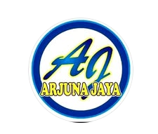
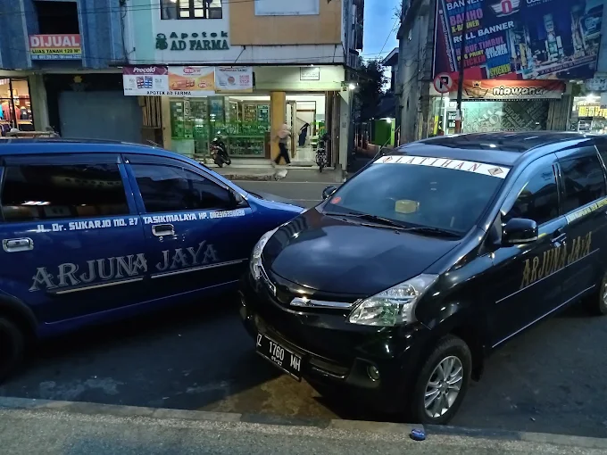

Kursus Mengemudi
Pelatihan bertahap dari pengenalan kendaraan hingga praktik berkendara di jalan raya.
Pelajari materi →
LKP ARJUNA JAYALEMBAGA KURSUS & PELATIHAN
Belajar mengemudi dari dasar bersama instruktur yang Profesional dan Berpengalaman.

Armada
Arjuna Jaya
KENAPA ARJUNA JAYA
Sejak 2013, kami secara konsisten mendampingi calon pengemudi melalui metode pelatihan bertahap yang terencana dan berfokus pada penguasaan keterampilan.
Pelatihan bertahap dari pengenalan kendaraan hingga praktik berkendara di jalan raya.
Pelajari materi →Bantuan informasi dan layanan pembuatan SIM untuk melengkapi kebutuhan berkendara Anda. Hubungi cabang pilihan Anda untuk informasi jadwal, program, dan layanan.
PROGRAM PEMBELAJARAN
Materi dirancang agar Anda memahami dasar kendaraan, terampil mengendalikan mobil, dan lebih siap di jalan.
FONDASI BERKENDARA
Pengenalan KendaraanPengecekan komponen mesin, fungsi indikator dashboard, dan kelayakan kendaraan.
Regulasi Lalu LintasPemahaman rambu-rambu, marka jalan, serta etika berkendara aman.
Keselamatan KerjaProsedur darurat di jalan raya dan penggunaan sabuk pengaman.
PRAKTIK BERTAHAP
Pengoperasian DasarTeknik menyalakan mesin, pengaturan posisi duduk, penggunaan kopling/transmisi, dan teknik pengereman halus.
Manajemen Ruang & KendaliLatihan maju-mundur, slalom, parkir paralel, serong, dan garage, serta maju di tanjakan atau turunan.
Berkendara di Jalan RayaPraktik langsung menghadapi lalu lintas padat, jalan sempit, serta teknik defensive driving.
DUA CABANG UNTUK ANDA
Hubungi cabang pilihan Anda untuk informasi jadwal, program, dan layanan.
Jl. Bebedahan, Rajapolah, Kec. Rajapolah, Kabupaten Tasikmalaya, Jawa Barat 46155
0823-1000-2599Senin–Sabtu · 08.00–17.00 WIB
Jl. Dr. Sukarjo No.27, Tawangsari, Kec. Tawang, Kab. Tasikmalaya, Jawa Barat 22848
0838-6383-9101Senin–Sabtu · 08.00–17.00 WIB
ULASAN PESERTA
Pengalaman nyata peserta yang telah belajar bersama LKP Arjuna Jaya.
“Saya belajar mengemudi dari nol. Pelatihnya sangat baik dan kompeten dalam mengajari siswanya untuk belajar mengemudi.”
“Pelatihnya sabar, santai, dan setiap penjelasan mudah dipahami. Waktu fleksibel bisa menyesuaikan.”
“Belajar mobil dari nol didampingi dengan sabar. Intinya saat menyetir harus fokus dan percaya diri.”
SIAP MULAI BELAJAR?